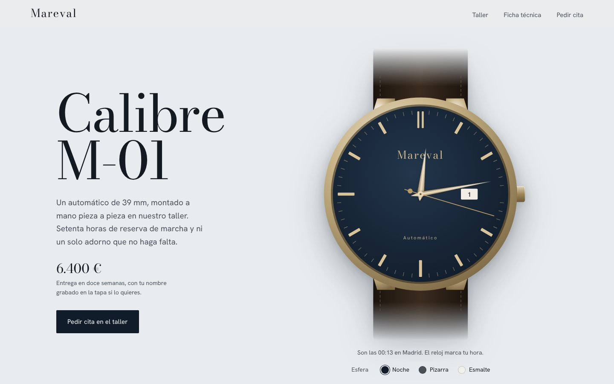

Mareval
Web de producto para una relojera de lujo inventada.
El reloj está dibujado en SVG y marca la hora real de quien la visita. Al bajar, se desmonta en 3D pieza a pieza (cristal, agujas, esfera, caja, movimiento con sus ruedas girando, rotor y fondo) y se vuelve a montar, solo con CSS y JavaScript. También cambia el color de la esfera en directo y tiene un formulario de cita que valida los datos.
HTML, CSS 3D, JavaScript y SVG, sin librerías